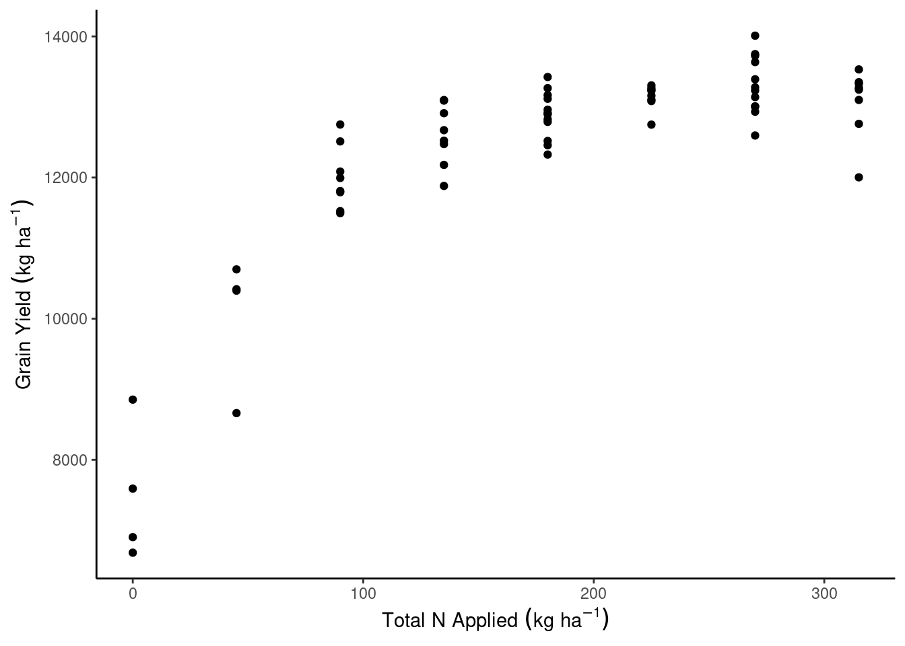

library(tidyverse)Day 20 - 10/04/2024
Announcements
- Mid-semester feedback survey (please and thank you!)
Model selection demo
Load the data:
The data shown here can be found at https://doi.org/10.1002/agj2.20812.
dd_yield <- readxl::read_xlsx("data/8.Yield_Plant_Measurements.xlsx", sheet = 2) %>%
filter(Year == 2014,
State == "IA",
Site == "Ames") %>%
mutate(across(VT_TissN:R4N, ~ as.numeric(.)))
dd_soil <- readxl::read_xlsx("data/1.Site_Characterization.xlsx", sheet = 2) %>%
filter(Year == 2014,
State == "IA",
Site == "Ames",
Horizon == "Ap") %>%
mutate(Block = as.numeric(Block),
across(Clay:WC, ~as.numeric(.)))
dd_N <- readxl::read_xlsx("data/4.SoilN.xlsx", sheet = 2) %>%
filter(Year == 2014,
State == "IA",
Site == "Ames",
Plot_ID %in% dd_yield$Plot_ID,
Sam_Time == "Post") %>%
mutate(across(c(Plot_ID, N_Trt, Plant_N, Side_N, Plant_N_SI, Side_N_SI), ~as.numeric(.)))dd_complete <- dd_yield %>%
left_join(dd_soil) %>%
left_join(dd_N)
dd_complete <- dd_complete %>%
mutate(gyield_14 = GYdry/.94,
N_total = Plant_N_SI + Side_N_SI)dd_complete %>%
ggplot(aes(N_total, gyield_14))+
geom_point()+
theme_classic()+
labs(x = expression(Total~N~Applied~(kg~ha^{-1})),
y = expression(Grain~Yield~(kg~ha^{-1})))
m0 <- lm(gyield_14 ~ N_total, data = dd_complete)
m1 <- lm(gyield_14 ~ N_total + I(N_total^2), data = dd_complete)
m2 <- lm(gyield_14 ~ N_total + I(N_total^2) + Block , data = dd_complete)
m3 <- lm(gyield_14 ~ N_total + I(N_total^2) + Block + PMPM, data = dd_complete)
m4 <- lm(gyield_14 ~ N_total + I(N_total^2) + Block + PMPM + Clay, data = dd_complete)
m5 <- lm(gyield_14 ~ N_total + I(N_total^2) + Block + PMPM + Clay + Sand, data = dd_complete)
m6 <- lm(gyield_14 ~ N_total + I(N_total^2) + Block + PMPM + Clay + Sand + Silt, data = dd_complete)summary(m1)
Call:
lm(formula = gyield_14 ~ N_total + I(N_total^2), data = dd_complete)
Residuals:
Min 1Q Median 3Q Max
-1402.83 -327.26 -14.24 417.76 1351.67
Coefficients:
Estimate Std. Error t value Pr(>|t|)
(Intercept) 8.087e+03 2.265e+02 35.70 <2e-16 ***
N_total 4.550e+01 2.886e+00 15.77 <2e-16 ***
I(N_total^2) -9.652e-02 8.239e-03 -11.71 <2e-16 ***
---
Signif. codes: 0 '***' 0.001 '**' 0.01 '*' 0.05 '.' 0.1 ' ' 1
Residual standard error: 564.3 on 61 degrees of freedom
Multiple R-squared: 0.8734, Adjusted R-squared: 0.8692
F-statistic: 210.4 on 2 and 61 DF, p-value: < 2.2e-16m_full <- lm(gyield_14 ~ N_total + I(N_total^2), data = dd_complete)
m_red <- lm(gyield_14 ~ 1, data = dd_complete)
SSE_full <- sum(m_full$residuals^2)
SSE_red <- sum(m_red$residuals^2)
df_full <- m_full$df.residual
df_red <- m_red$df.residual
n <- nrow(dd_complete)
p <- length(coef(m_full))-length(coef(m_red))
F_star <- ((SSE_red-SSE_full)/p) / (SSE_full/(n-p-1))
(p_value <- df(F_star, df1 = 1, df2 = df_full))[1] 2.190036e-22summary(m_full)
Call:
lm(formula = gyield_14 ~ N_total + I(N_total^2), data = dd_complete)
Residuals:
Min 1Q Median 3Q Max
-1402.83 -327.26 -14.24 417.76 1351.67
Coefficients:
Estimate Std. Error t value Pr(>|t|)
(Intercept) 8.087e+03 2.265e+02 35.70 <2e-16 ***
N_total 4.550e+01 2.886e+00 15.77 <2e-16 ***
I(N_total^2) -9.652e-02 8.239e-03 -11.71 <2e-16 ***
---
Signif. codes: 0 '***' 0.001 '**' 0.01 '*' 0.05 '.' 0.1 ' ' 1
Residual standard error: 564.3 on 61 degrees of freedom
Multiple R-squared: 0.8734, Adjusted R-squared: 0.8692
F-statistic: 210.4 on 2 and 61 DF, p-value: < 2.2e-16R2 <- 1 - SSE_full/SSE_red #R2
p <- length(m_full)
R2_adj <- R2 - (1-R2)*((p-1)/(n-p)) #R2_adj
R2[1] 0.8733964R2_adj[1] 0.8466149metrics <- data.frame(model = c("N_total",
"N_total + I(N_total^2)",
"N_total + I(N_total^2) + Block",
"N_total + I(N_total^2) + Block + PMPM",
"N_total + I(N_total^2) + Block + PMPM + Clay",
"N_total + I(N_total^2) + Block + PMPM + Clay + Sand",
"N_total + I(N_total^2) + Block + PMPM + Clay + Sand + Silt"),
R2 = c(summary(m0)$r.squared, summary(m1)$r.squared, summary(m2)$r.squared,
summary(m3)$r.squared, summary(m4)$r.squared, summary(m5)$r.squared, summary(m6)$r.squared),
R2_adj = c(summary(m0)$adj.r.squared, summary(m1)$adj.r.squared, summary(m2)$adj.r.squared,
summary(m3)$adj.r.squared, summary(m4)$adj.r.squared, summary(m5)$adj.r.squared,
summary(m6)$adj.r.squared),
AIC = AIC(m0, m1, m2, m3, m4, m5, m6)$AIC,
BIC = BIC(m0, m1, m2, m3, m4, m5, m6)$BIC) %>%
mutate(across(R2:BIC, ~round(., 3)))
knitr::kable(metrics, format = "html")| model | R2 | R2_adj | AIC | BIC |
|---|---|---|---|---|
| N_total | 0.589 | 0.582 | 1070.935 | 1077.412 |
| N_total + I(N_total^2) | 0.873 | 0.869 | 997.500 | 1006.136 |
| N_total + I(N_total^2) + Block | 0.878 | 0.872 | 997.147 | 1007.941 |
| N_total + I(N_total^2) + Block + PMPM | 0.882 | 0.874 | 996.822 | 1009.775 |
| N_total + I(N_total^2) + Block + PMPM + Clay | 0.883 | 0.873 | 998.453 | 1013.566 |
| N_total + I(N_total^2) + Block + PMPM + Clay + Sand | 0.886 | 0.874 | 999.008 | 1016.279 |
| N_total + I(N_total^2) + Block + PMPM + Clay + Sand + Silt | 0.886 | 0.874 | 999.008 | 1016.279 |
data_plot <- expand.grid(N_total = seq(0, 300, by = 5),
Block = 1:4)
data_plot <- data_plot %>% bind_cols(predict(m1, newdata = data_plot, interval = "confidence"))dd_complete %>%
ggplot(aes(N_total, gyield_14))+
theme_classic()+
geom_ribbon(aes(y = fit, ymin = lwr, ymax = upr), data = data_plot, alpha = .15)+
geom_line(aes(y = fit, group = Block), data = data_plot)+
geom_point()+
labs(x = expression(Total~N~Applied~(kg~ha^{-1})),
y = expression(Grain~Yield~(kg~ha^{-1})))
Important questions/concepts
Variable selection
- What is the data generation process?
- What is the cost of including certain predictors?
Watch out:
- Collinearity (next week)
- Penalized fit statistics are still using the same data used to fit the models…
- There are other strategies for model selection (e.g., RMSE - out-of-sample prediction accuracy)
For next week
- Please complete the mid-semester feedback survey (please and thank you!)
- Reach out to me regarding your projects.
- Please read Chapter 10 (3.5 pages long!)